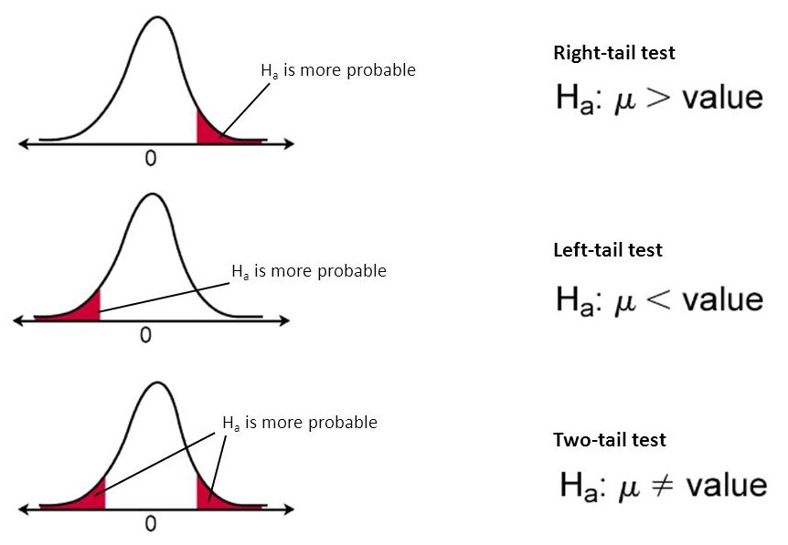

Often times in statistics, it is necessary to determine the truthfulness of someone else's claim
This is called hypothesis testing
The null hypothesis \(H_0\) (pronounced H-nought) is testing against an alternate hypothesis
The null hypothesis is what the claim is
For example, a possible claim would be "the average Subway footlong is 12 inches in length"
Therefore, the hypothesis is that \(H_0: \mu = 12\)
Now suppose you want to consider an alternate hypothesis \(H_a\)
For example, you could say "the average Subway footlong is less than 12 inches in length"
Then, your hypothesis would be \(H_a: \mu < 12\)
An alternate hypothesis can take many forms
The above one is called a one sided hypothesis
This is one in you're only testing for if a value is less than or greater than the claim
A two-sided hypothesis is when you are testing for if a value is different than the claim, in either direction
In the subway example, you wouldn't really care if the real mean length was greater than 12, so you would use a one sided hypothesis
Suppose you created a sampling distribution using your claimed mean
Now, examine the probability of a sample more extreme than or as extreme as the one taken
Extremity is relative to the sampling distribution's mean
In rare cases, you don't do this
For example, if your alternate hypothesis is that the true mean is greater than the claim, but your sample mean is less than the claim, then you would find the area greater than that point
Only if you have a one-sided test and under the special circumstance
The image below displays how you determine your areas

As seen demonstrated here, for one-sided and two-sided tests
If the probability is very small, you can infer that the claim is probably wrong
This probability is called the p-value
If the p-value is less than the significance level (represented by \(\alpha\)), then you can say with statisical significance that the claim is false
A common significance level is \(\alpha = 0.05\)
If your sample is rarer than this, then you have statistically significant evidence
When you have a two-sided test, you must multiply your resulting p-value by two, as it represents both the tails, on either side
There are two possible errors you may make when doing a hypothesis test
A Type 1 Error is when you determine the claim to be false (i.e. you reject the null hypothesis) even though it is actually true
Generally the more serious issue
Basically a false positive
A Type 2 Error is the opposite - it is a false negative
You don't reject the null hypothesis, but in reality, it was untrue all along
In the following pages, we will go over how to conduct a hypothesis test for proportions and means